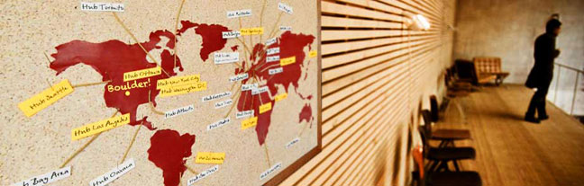

The Hub is finally coming to Boulder and dojo4 is proud to be one of its founders. The are currently over 25 Hubs all around the world, from Copenhagen to Johannesburg, Prague to Tel Aviv serving over 4000 members in the endeavors as entrepreneurs and changemakers.
One reason we've been excited to sponsor this project and sit on the board to help get it going, is that we recognize that Boulder is already a hub. Boulder is a hub for entrepreneurs, innovators and startups that are driven by a passion to see things differently and to use that vision for the betterment of this world of ours. We know this because we have these changemakers walk through our doors every day. We build and design technology for them. We drink beer with them on Friday afternoons. We see them hatch ideas and run with them. We are proud to be in their company and count ourselves among them.
And now Boulder will have a place for housing this energy that is so vibrant here. The Hub is a co-working space, but it is also a meeting place, an event venue, a training ground, an incubator, a mentoring platform and an international network. It's a place for people to connect and use those connections to grow their social ventures and world-changing endeavors.
The Hub will open in downtown Boulder in September. For more information, to find out about upcoming pre-opening events and early bird membership specials, go to hubboulder.com.